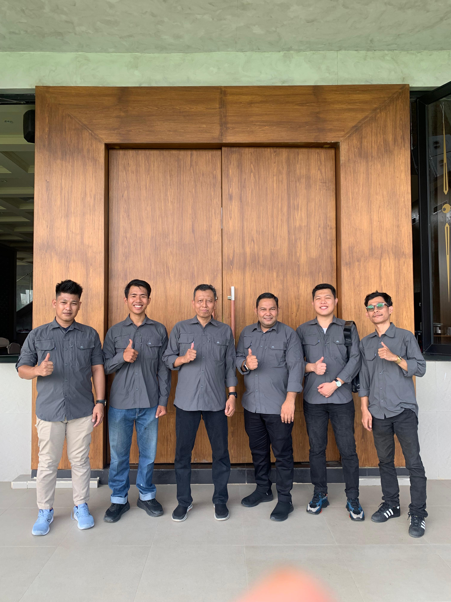
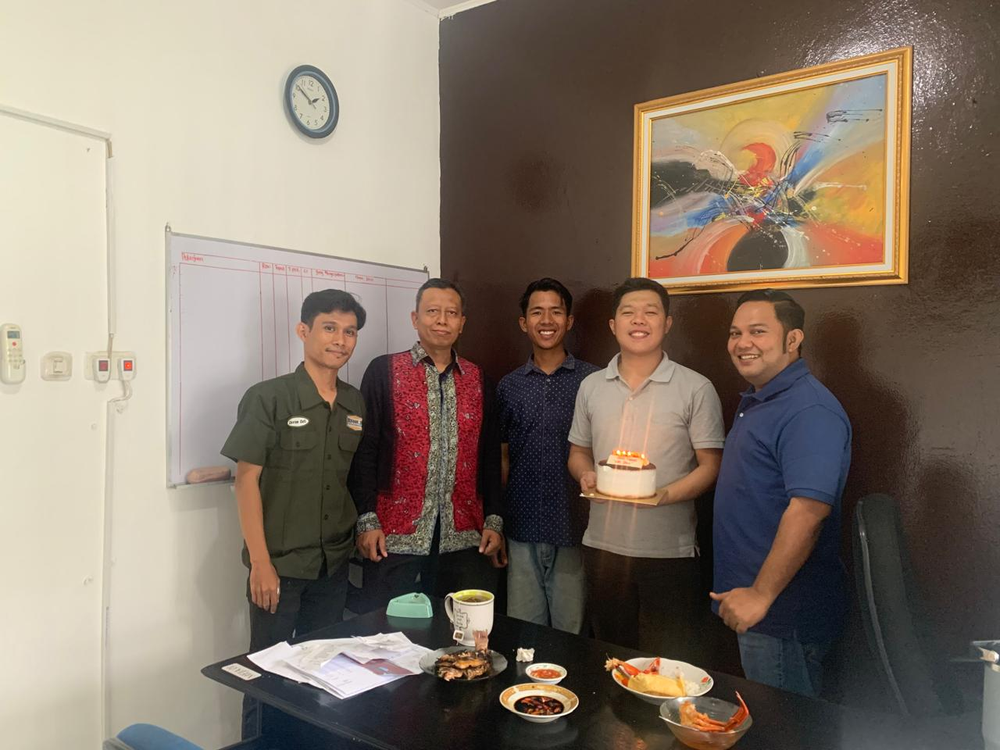
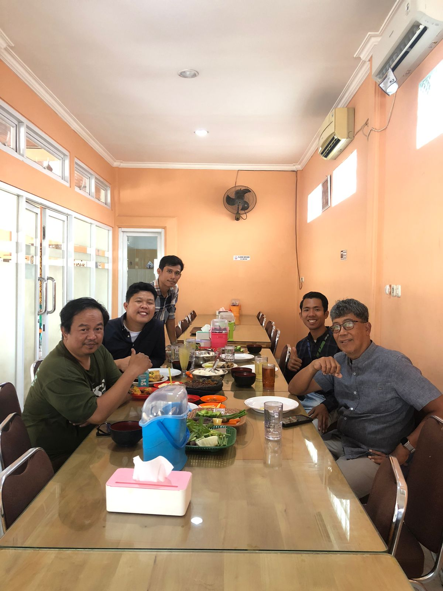
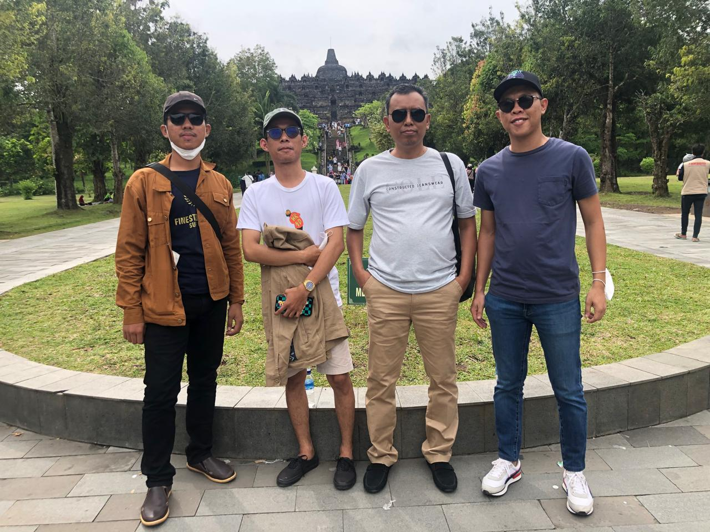

Portofolio Proyek Strategis & Direktori 40 Rekanan Resmi
Rekam jejak kepemimpinan KJPP NSR dalam penilaian pengadaan tanah Proyek Strategis Nasional (PSN) Kementerian PUPR & BPN, serta kepercayaan 40 institusi perbankan BUMN, bank swasta (termasuk Bank Kasikorn), BUMN karya, dan korporasi terkemuka di Indonesia.
Rekam Jejak Penilaian Jalan Tol & Transmisi Listrik
Pengalaman nyata penugasan Pengadaan Tanah Bagi Pembangunan Kepentingan Umum merujuk UU No. 2/2012 dan Standar Penilaian Indonesia (SPI 204).
Jalan Tol Batang – Semarang
Penilaian ganti kerugian tanah, bangunan, dan tanaman untuk Seksi I, II, dan III. Luas penugasan ribuan bidang lahan di Jawa Tengah.
Jalan Tol Pemalang – Batang
Kajian pengadaan tanah SPI 204 fisik dan non-fisik (solatium, masa tunggu) sepanjang koridor pantai utara Jawa Tengah.
Jalan Tol Pejagan – Pemalang
Inventarisasi dan valuasi ganti kerugian tanah kas desa, tanah wakaf, serta pemukiman warga di Kabupaten Brebes dan Tegal.
Jalan Tol Semarang – Solo
Penilaian koridor Boyolali - Kartasura, mencakup topografi lereng, struktur jembatan, dan sarana utilitas publik.
Tol Solo – Ngawi & Ngawi – Kertosono
Penilaian tanah pertanian sawah produktif beririgasi teknis dan pemukiman sepanjang perbatasan Jawa Tengah - Jawa Timur.
Tol Bakauheni – Terbanggi Besar
Penilaian koridor utama Jalan Tol Trans Sumatera (JTTS) Lampung, meliputi perkebunan kelapa sawit, karet, dan lahan industri.
Tol Terbanggi Besar – Kayu Agung
Seksi Pematang Panggang - Kayu Agung, penilaian ganti rugi tanah rawa, konsesi hutan tanaman industri (HTI), dan lahan adat.
Jalan Tol Pekanbaru – Dumai
Kajian pengadaan tanah kawasan industri perminyakan, perkebunan kelapa sawit skala besar, dan underpass perlintasan gajah.
Transmisi Listrik SUTT / SUTET PLN
Penilaian kompensasi tanah tapak tower dan Right of Way (ROW) jalur transmisi kelistrikan Jawa Barat, Banten, dan Sumatera.
2. Infrastruktur Jalur Kereta Api & Akses Stasiun Publik
Double-Double Track (DDT) KA Manggarai – Cikarang Paket B2 (1)
Penilaian ganti rugi tanah, bangunan, dan utilitas pengadaan tanah jalur rel kereta api Double-Double Track (DDT) Paket B2 (1) Kota Bekasi seluas 8.700 m2.
• Pemberi Tugas: Satker Pengadaan Tanah Jalur Kereta Api, Ditjen Perkeretaapian Kemenhub RI
• Ruang Lingkup: Koridor rel kereta api perkotaan padat penduduk, verifikasi alas hak & perhitungan kerugian fisik/non-fisik
Pengadaan Lahan Pembangunan Jalan Akses Stasiun Kereta Sukaresmi
Penilaian pengadaan lahan untuk pembangunan fasilitas intermoda jalan akses Stasiun Kereta Api Sukaresmi Tahap I (sepanjang 575 Meter) dan Tahap II (sepanjang 1.500 Meter) di Kota Bogor.
• Pemberi Tugas: Dinas Bina Marga dan Sumber Daya Air Pemerintah Kota Bogor
• Ruang Lingkup: Penilaian koridor tanah, tanaman, tegakan, dan bangunan fasilitas penunjang transportasi publik
3. Valuasi Portofolio BUMN Industri, Energi & Utilitas Terintegrasi
PT Semen Indonesia (Persero) Tbk • SIG Group
Penilaian komprehensif aset pabrik semen terpadu, area tambang bahan baku, fasilitas klinker, silo, utilitas industri di Pabrik Tuban (Jawa Timur), Pabrik Gresik, dan fasilitas PT Semen Tonasa (Pangkep, Sulsel).
• Objek Valuasi: Lahan kawasan pabrik, mesin & peralatan industri berat, jetty & pelabuhan khusus
• Tujuan: Pelaporan keuangan berkala, asuransi, dan manajemen portofolio aset BUMN
PT Pertamina EP • Wilayah Kaltim & Kaltara
Penilaian aset fasilitas operasi hulu migas, sumur produksi, jaringan pipa transmisi, dan infrastruktur penunjang di Field Bunyu, Field Sangatta, dan Field Tarakan.
• Objek Valuasi: Instalasi pengolahan, workshop mekanikal, lahan operasional, tangki timbun
• Tujuan: Penatausahaan aset hulu energi, uji penurunan nilai (*impairment test*), dan transaksi
PT PLN (Persero) • PLTP, SUTT & Gardu Induk
Penilaian Proyek PLTP Hululais (Bengkulu), koridor transmisi SUTT 275 kV & 150 kV Rengat – Pangkalan Kerinci, Gardu Induk Leuwisadeng, dan Pusat Pengatur Beban (P2B Gandul) Jawa-Madura-Bali.
• Objek Valuasi: Tapak tower, ruang bebas (RoW), gardu transmisi, instalasi panas bumi
• Tujuan: Ganti kerugian tanah publik, kepatuhan SPI 204 & inventarisasi aset transmisi
Penilaian tanah kebun, pabrik pengolahan komoditas, tanaman karet, teh, serta properti investasi Kebun Panglejar Walini.
• Standar Akuntansi: PSAK 13, 16, 48 & 69 (Aset Biologis)
• Periode Penugasan: Kontrak Kerja Sama Berkala (2018 – 2024)
PT Komet Infra Nusantara
Valuasi portofolio massal 818 Menara Telekomunikasi (BTS) dan 403 Tenant di wilayah Jawa, Sumatera, dan Bali.
• Objek Valuasi: Menara Baja, Shelter, Sistem Daya & Lahan Sewa
• Skala Jangkauan: Multi-Provinsi (Jawa, Sumatera, Bali)
4. Penilaian Armada Maritim & Alat Berat Pertambangan/Konstruksi
Valuasi Portofolio Kapal Pelayaran & Angkutan Energi
Pemeriksaan teknis lapangan (*on-hire/off-hire condition*) dan valuasi pasar 60+ unit kapal laut: Kapal Tunda (*Tugboat*), Tongkang (*Oil & Coal Barge*), Self-Propelled Oil Barge (SPOB), Landing Craft Tank (LCT), Bulk Carrier, dan Fast Passenger Boat.
• Lokasi Survei & Docking: Pelabuhan Tanjung Priok, Balikpapan, Samarinda, Gresik, Berau, Batam
• Metodologi: Pendekatan Biaya Pengganti Terdepresiasi (DRC) & Pendekatan Pasar per gross tonnage (GT)
Valuasi Alat Berat Pertambangan, Perkebunan & Infrastruktur
Inspeksi fisik, verifikasi jam operasi (*hour meter*), serial number komponen utama, dan valuasi 34+ unit alat berat: Excavator Kelas Berat (CAT 320/330, Komatsu PC200/PC300), Bulldozer D85, Wheel Loader, Heavy Dump Truck Tambang, dan Mobile Crane.
• Lokasi Proyek & Site: Papua, Luwu Timur (Sulsel), Kalimantan Utara, dan Sidoarjo (Jatim)
• Tujuan Penilaian: Agunan pembiayaan bank BUMN/swasta, lelang aset, dan pelaporan keuangan
5. Studi Kelayakan Investasi (Feasibility Study) & HBU Analysis
RS Jantung & Pembuluh Darah Jakarta
Studi kelayakan pengembangan fasilitas cath-lab, ruang operasi bedah jantung terpadu, dan analisis kelayakan finansial belanja modal (Capex).
• Lingkup: NPV, IRR, Payback Period & DSCR
• Keluaran: Laporan FS Bankable untuk sindikasi
RS Sahabat Sehat & RS Permata Medika
Penyusunan feasibility study kelayakan investasi pendirian dan pengembangan rumah sakit rujukan tipe C ke tipe B di wilayah Jawa.
• Lingkup: Permintaan pasar, tarif kamar, occupancy
• Keluaran: Dokumen pengajuan pembiayaan investasi
Kertajati Aerocity (BIJB Majalengka)
Studi kelayakan pengembangan kawasan aerotropolis terintegrasi Bandara Internasional Kertajati: zona logistik, perhotelan transit & komersial.
• Lingkup: HBU analysis, zonasi, pentahapan modal
• Keluaran: Masterplan kelayakan investasi kawasan
Ruko Commercial Tangerang City (199 Unit)
Valuasi pasar dan analisis serapan ruang usaha komersial 199 unit ruko rukan di kompleks superblok pusat kota Tangerang.
• Lingkup: Valuasi agunan perbankan & serapan pasar
• Keluaran: Opini nilai wajar per unit & portofolio
6. Inventarisasi & Valuasi Barang Milik Daerah (BMD) di 19 Kabupaten/Kota
Pendampingan Neraca Aset Daerah & Penyusunan LKPD Berbasis Akrual
KJPP NSR memiliki rekam jejak terverifikasi dalam sensus, inventarisasi fisik, penilaian wajar kembali (*revaluasi*), dan pemetaan GIS aset tetap tanah, gedung perkantoran, jaringan jalan, irigasi, dan jembatan (KIB A, C, D, E) untuk penyusunan Laporan Keuangan Pemerintah Daerah (LKPD) menuju Opini Wajar Tanpa Pengecualian (WTP).
- Pemerintah Kota Bandung
- Pemerintah Kabupaten Subang
- Pemerintah Kabupaten Tasikmalaya
- Dinas Bina Marga & SDA Pemkot Bogor
- BPKAD Kab. Kepulauan Mentawai (Sumbar)
- Pemerintah Kota Pematangsiantar (Sumut)
- Pemerintah Kabupaten Asahan (Sumut)
- Pemkab Tanggamus, Pringsewu & Lambar
- Pemerintah Kota Kendari (Sultra)
- Pemerintah Kabupaten Kolaka (Sultra)
- Pemerintah Kabupaten Muna (Sultra)
- Pemerintah Kabupaten Konawe (Sultra)
- Pemerintah Kabupaten Tabanan (Bali)
- Inventarisasi Aset Fasilitas Pariwisata
- Revaluasi Aset Gedung & Tanah Daerah
- Sinkronisasi Sistem Informasi BMD (SIMDA)
Direktori 40 Rekanan Lembaga Keuangan & BUMN
Terdaftar resmi sebagai rekanan penilai properti pada bank BUMN, bank swasta nasional, kementerian, BUMN infrastruktur, dan korporasi terbuka.
Penilaian Agunan Korporasi & Komersial
Penilaian Agunan SME & Komersial
Penilaian Properti & Aset Sindikasi
KPR Komersial & Proyek Perumahan
Valuasi Pembiayaan Syariah

PT Bank Kasikorn (Kasikornbank)
Penilaian Agunan Komersial & KPR
Penilaian Aset Komersial & SME
Penilaian Agunan Korporasi
Penilaian Properti & Gedung
Pengadaan Tanah Jalan Tol (SPI 204)
Lisensi Penilai Pertanahan Nasional
Jalan Tol Trans Sumatera (JTTS)
Jalan Tol Trans Jawa & Jabodetabek
Transmisi Listrik SUTT / SUTET & ROW
| No | Nama Mitra / Lembaga | Kategori | Ruang Lingkup Kerjasama / PKS | Status Rekanan |
|---|---|---|---|---|
| 01 | PT Bank DKI | Bank BUMD | Penilaian Agunan Kredit Komersial & Sindikasi | Aktif |
| 02 | PT Bank Rakyat Indonesia (Persero) Tbk | Bank BUMN | Penilaian Agunan SME & Komersial Nasional | Aktif |
| 03 | PT Bank Pembangunan Daerah Jawa Barat dan Banten Tbk (Bank BJB) | Bank BUMD | Penilaian Properti Komersial & Industri | Aktif |
| 04 | PT Bank Tabungan Negara (Persero) Tbk | Bank BUMN | Penilaian Proyek Perumahan & KPR Komersial | Aktif |
| 05 | PT Bank Syariah Indonesia Tbk (BSI) | Bank Syariah | Valuasi Pembiayaan Syariah Nasional | Aktif |
| 10 | PT Bank Kasikorn (Kasikornbank) | Bank Multinasional | Penilaian Agunan Kredit Komersial & Korporasi | Aktif |
| 11 | Kementerian PUPR RI | Kementerian | Pengadaan Tanah PSN Jalan Tol (SPI 204) | Aktif |
| 12 | PT Hutama Karya (Persero) | BUMN Karya | Jalan Tol Trans Sumatera (JTTS) | Aktif |
| 13 | PT PLN (Persero) | BUMN Energi | Kompensasi Jalur ROW & Tapak Tower SUTT | Aktif |
Galeri Kegiatan Survei & Diklat Lapangan
Dokumentasi nyata kegiatan inspeksi fisik, pemotretan ber-GPS, koordinasi bersama satker kementerian, dan rapat kerja dewan pimpinan nasional.

Tim Operasional Palembang

Kesiapan Kantor Palembang

Pengarahan Manajemen Pusat

Sinergi Tim Palembang

Operasional Cabang Padang

Musyawarah Ganti Rugi Lahan

Rakor Akses Tol IKN Kaltim

Inspeksi Armada Transportasi

Pendidikan Khusus SPI 204

PPL MAPPI Hukum Perikatan

Valuasi Agunan Bank BJB

Gathering Akbar Nasional
Ingin Menjalin Kerjasama Rekanan dengan KJPP NSR?
Kami siap memenuhi kualifikasi seleksi rekanan baru lembaga perbankan, BUMN, dan korporasi terdaftar OJK.